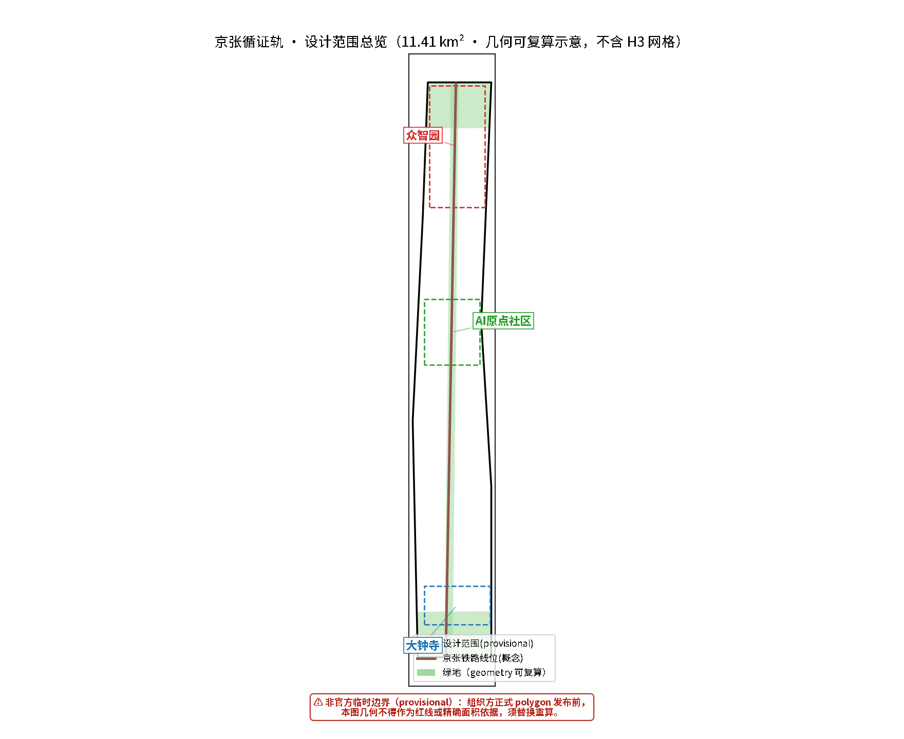
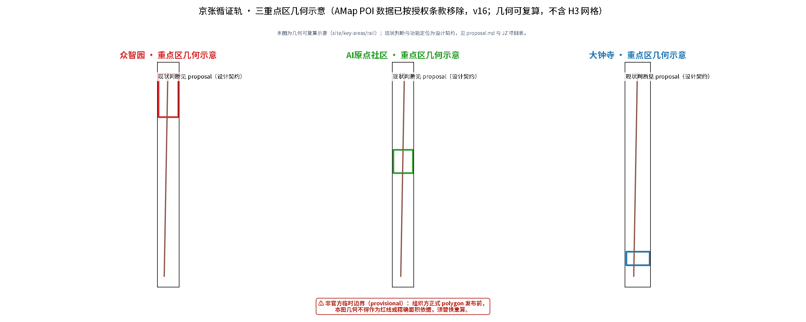
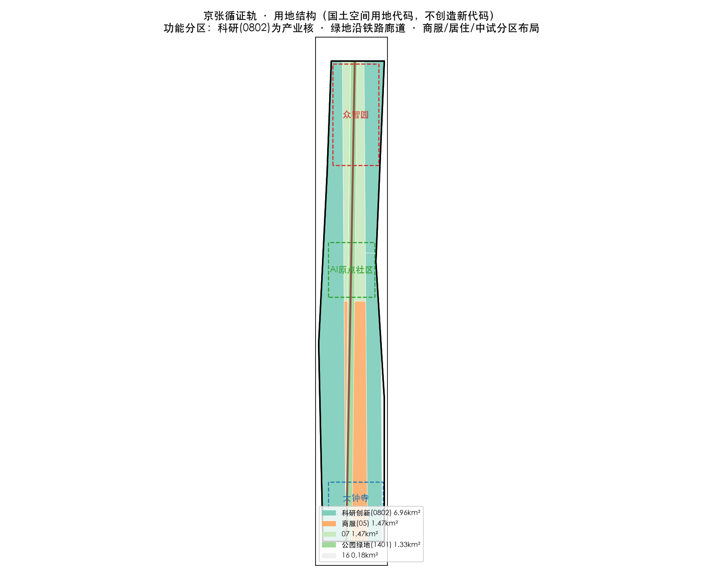
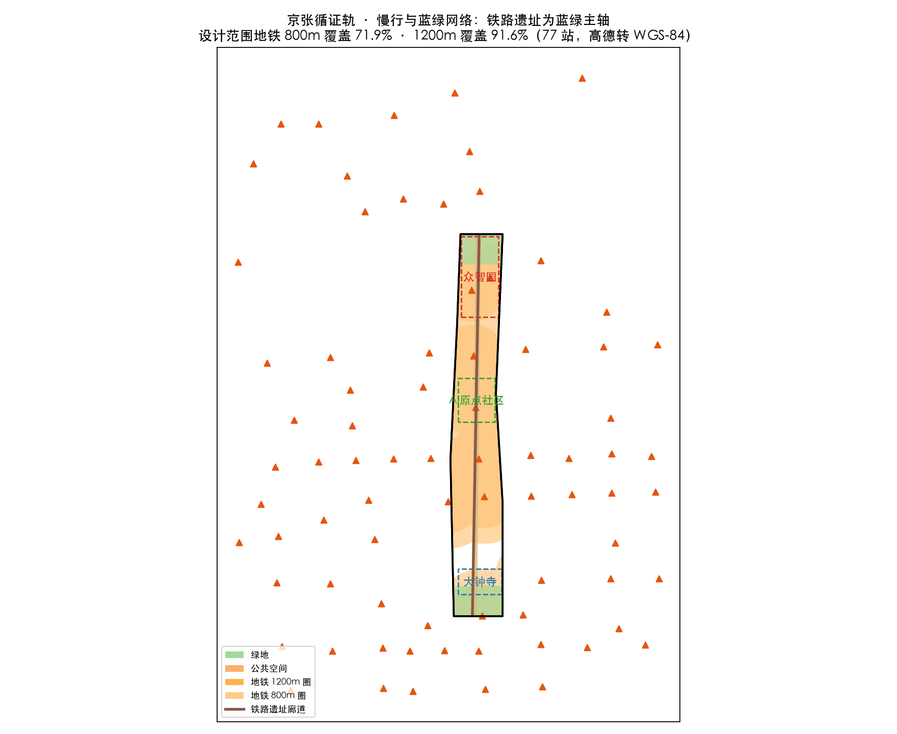
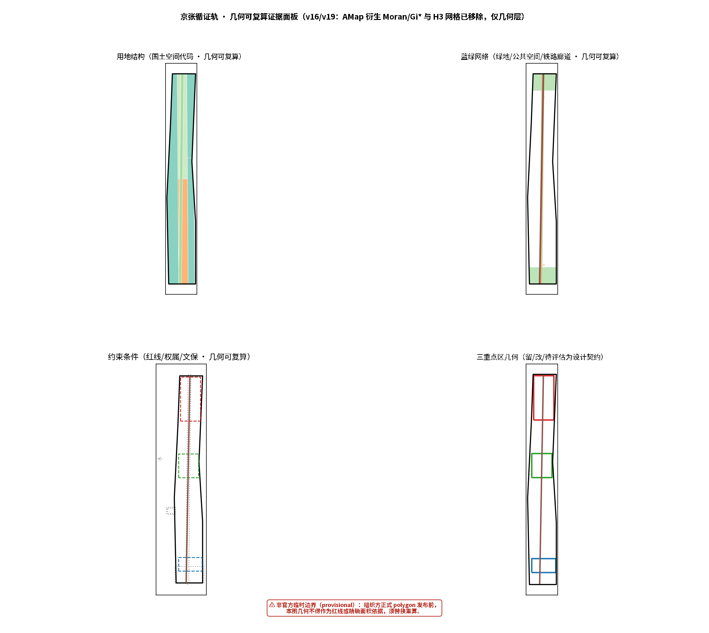

京张循证轨：一条可验证、渐进更新的 AI 公共创新带
以循证渐进式参与规划（EBIP）为方法论，将百年京张铁路的自主创新历史转译为可验证、渐进更新的 AI 公共创新带；空间上形成一带三核多点场景，治理上以证据分级、假设透明与人工复核保障 AI 参与规划的可归责性。
京张循证轨：一条可验证、渐进更新的 AI 公共创新带
为什么叫"循证轨"：一条轨道，两重含义
一百多年前，京张铁路是中国人自主勘测、设计、修建的第一条干线铁路。在外国势力断言"中国不能自建铁路"的年代，詹天佑和建设者们用"之"字线、竖井施工法等自主技术，硬是在崇山峻岭间铺出了这条路。这条铁路真正的产出，不只是路本身——许多段落早已不再跑车，变成了脚下的遗址公园——而是"我们中国人可以自己修"这件事被证明了一次，它改变了所有人对可能性的判断。自主创新、实证求索、在困难条件下把事情做成，这是京张留给这条创新带最深的基因 来源 来源。
本提案取名"循证轨"，正是对这段历史的当代转译：
- "轨"的第一重含义，是京张铁路遗址——这条长约 9 公里的线性公共空间主轴，是历史与公共性的物质载体。方案的一切空间策略都围绕"不破坏、可修缮、渐进更新"这条轨道展开 来源。
- "轨"的第二重含义，是 AI 参与规划的"轨道"——即一套可复用、可检验、负责任的智能体工作方法。本方案由 AI 智能体生成，它不假装拥有人类规划师的现场判断力，而是把"证据可溯源、指标可复算、假设可审查、结论可回退"作为自己运行的轨道。循证，就是这条轨道上的每一节都经过检验 深度。
两重含义在此交汇：如同京张铁路用自主技术证明了"中国人可以自己修"，本提案希望用一套透明的证据链证明"AI 智能体可以在城市设计决策中承担理性化工具的角色，且不越界、可归责"。这不是要 AI 替代规划师，而是让 AI 作为城市设计决策的理性化工具，在（后）实证主义的基础上，通过证据分级、边界声明、反事实检验与自检闭环实现反思性——先解决技术可靠性（数据可复现、模型可复算、流程无错误），再谈其他价值。
---
设计依据与资料清单
本 formal 方案以北京市规划和自然资源委员会海淀分局发布的《百年京张AI创新带城市设计国际方案征集资格预审公告》为第一依据，并以 brief/site-package/ 中经维护者登记的临时粗略边界、重点区域、枚举、指标和来源清单为机器可读依据。AI agent 在生成方案前必须读取 design_brief.json、allowed_design_space.json、sources.json、enums/、ranges/、schemas/、data/source_registry.json 和 data/processed/agent_fact_pack.md，并用 project_scope_summary.csv、agent_task_requirements.csv、source_use_matrix.csv、missing_data_checklist.csv 建立任务、范围、资料用途和缺口清单。所有设计判断都要拆分为可追溯来源、可复算指标、可校验图层和可人工复核假设。公告要求方案达到控制性详细规划的城市设计深度和规划综合实施方案的城市设计深度，因此文本叙述不能替代 GeoJSON、指标表、A3 文册、A0 展板和 HTML 电子展示成果 来源 来源 深度。
方案不是独立愿景文本，而是从公告、面向智能体任务书和场地资料出发组织成果；本节只把最关键依据放在判断旁边。完整来源和标准覆盖分别保存在 sources.json、standard_matrix.json 与 design_depth_matrix.json，不在正文重复机器索引。
资料登记表的使用边界如下 来源：
- data/source_registry.json 登记公开、清权与临时资料的用途边界。
- 当前登记摘要：formal 可用资料 7 条，背景资料 1 条，provisional-only 资料 1 条。
- agent 不得把 background_only 或 provisional_only 资料升级为 official boundary、法定控规、正式评分依据或政府实施承诺。
上位规划衔接（官方语境）：本方案以《北京城市总体规划（2016年—2035年）》与《海淀分区规划（国土空间规划）（2017年—2035年）》为上位依据，落实"减量提质、存量更新"的发展语境 标准 来源；空间结构组织、15 分钟生活圈与三大设施配置遵循《海淀区详细规划街区指引》（2021，单元-街区两级体系）的传导要求 标准 来源；京张 AI 创新带空间协同框架与官方"三区两翼"布局衔接，重点区设计对接官方"北京AI原点社区"定位 来源。
本脚手架在官方 SITE_BOUNDARY 或三处 KEY_AREA 尚未取得时，使用 brief/site-package/geometry/provisional_boundaries.geojson 生成临时 formal 包。提交包中的 geometry/site_boundary.geojson 与 geometry/key_areas.geojson 均必须标注为 provisional_constraint、official_boundary=false，只能用于方案生成、自检、可视化和设计讨论，不能作为 official redline、审批依据、精确面积依据或法定控制结论。该组织方数据缺口本身不阻断内容评分；替换 official polygons 后，site boundary、key areas、land use、roads、green space、public space、buildings、phasing 和 metrics 均需重算 空间数据 指标 空间数据 指标。
---
方法论：循证渐进式参与规划（EBIP）
本方案的方法论框架为循证渐进式参与规划（Evidence-based Incremental Participatory Planning, EBIP），由四个支柱构成。它不是从某一套外部理论直接搬用，而是把本智能体的能力边界、中国规划的语境与竞赛的机器可审计要求综合而成。
1. 实证基础（后实证主义 × 实用理性）：知识具有暂时性与情境性，但坚持经验证据、可验证、可复现。方案中每个主张都对应 GeoJSON 要素、指标 ID 或来源记录，可被机械复算 来源。决策遵循实用理性六步——目标、替代方案、后果、选择、实施、评估，不追求不可能实现的"纯理性"最优。 2. 渐进决策（连续有限比较）：方案不承诺终极蓝图，而是提出"最短实施合同 + 版本化迭代"。这与我国改革实践中"试点先行、摸着石头过河、实践检验"的方法论存在机制层面的共性——先小规模试点（如 OPC 一人公司产业园等轻量载体），验证后再依据证据逐步扩展，不设立宏大而脱离实际的目标 深度。 3. 多元校准（参与、包容与人类参与的必要性）：为不同使用主体（科研人员、创业者、企业、居民、老年与无障碍使用者）分别设计"可检验的替代方案"与"普通路径"（无账号、无技术依赖的服务）；区分"征询意见"与"培育社区长期行动能力"两类机制。本智能体无法实地田野调查、入户访谈、感知场所氛围，也不具备移情能力——因此"人本"维度的判断必须由人类规划者与专业团队完成，本智能体的角色是提供可验证的证据基座与可复算的方案骨架，承认 AI 的局限，正是保证人类价值不被技术工具僭越的前提。 4. AI 反思性（理性化的自我审计）：证据分级审计（formal / provisional / background_only / unknown / design_target 严格区分，禁止升级）、边界声明（每个关键主张附"能证明什么、不能证明什么"）、反事实检验（追问"若前提不成立结论如何变化"）、自检闭环（self_check / preflight 机械校验，PASS 仅证明包内结构可复算，不证明现场绩效）。
AI 自动化迭代与工具复用（本方案的可运行底座）：循证轨不仅是一套方法论述，还配套了一套可运行、可复用的 AI 自动化工具链，支撑"数据 → 分析 → 成图 → 指标 → 自检 → PR"的多轮迭代闭环（仓库 continuous_participation 机制鼓励小步快跑：改一批 → 推 PR → 看分 → 再改）：
- 开源空间 skill：
urban-planning-ai-kit仓库（GitHub: ltf0109/urban-planning-ai-kit，MIT）沉淀了本项目全部空间分析工作流——投影选择、专题图、空间统计（Moran's I / Getis-Ord Gi* / KDE / GWR）、MCDA 双对象评价与功能分区、GeoJSON 优化，以及中国坐标偏移（GCJ-02/BD-09）校验修正脚本china_coords.py（统一(lat, lng)→(lat, lng)接口，杜绝高德/天地图数据与底图 50–700m 错位）来源。 - GeoAgent/QGIS MCP 桥接：
geoagent-bridgeMCP（fastmcp stdio server + 无头 PyQGIS 执行器）把本机 QGIS 的栅格/矢量计算（如 Moran's I、Getis-Ord Gi* 热点/冷点）暴露为可调用的工具，使空间分析结果可脚本化重放——每次迭代重跑同一管线即可得到可复算结果，不依赖人工操作 来源。 - 自动化闭环的价值：① 可复算——任何指标（绿地率、公共空间比、站点覆盖）都能从 GeoJSON 重算并对照
metrics.json（如 public_space_ratio 0.1178 与"一带"叙事一致，指标与几何同源）；② 可回归——每次修改都跑 self_check / preflight 四项机械 gate，防止"修 A 坏 B"；③ 坐标系纪律——分析图层双版本（GCJ-02 配高德/手绘、WGS-84 配提交物），提交物一律 WGS-84，跨脚本复用先核对转换签名；④ 官方数据触发重算——当组织方发布官方 boundary/key_areas polygon 时，同一管线可自动替换 provisional 几何并全量重算，把"等待官方数据"从阻塞变成一次可执行的自动化任务 指标 指标。 - 能力-局限边界：自动化解决的是"可复现、可复算、无流程错误"，不替代人类规划师的现场判断、利益协调与价值排序；本方案的每个自动化环节均保留人工复核入口（assumptions.json、self_check、专业团队待办），不把工具输出直接当作审定结论。
国内外案例的借鉴原则：本方案对国内外创新区、城市更新、站城一体等案例持批判性借鉴态度——案例仅提供机制启发（如场景开放、测试床、数据治理、运营体系），不构成价值前提或可直接套用的模板；一切正式主张以中国官方来源为最终依据，先校准海淀实况与上位规划，再评估任何外来方法的适用性。涉及更新利益问题时，使用"弱势群体与小商贩小业主是否流失、更新收益如何分配"等具体可操作的表述，而非抽象理论标签；方案充分体现我国社会主义市场经济的制度独特性——规划是国家计划与目标的手段，涉及国家—城市政府—公有部门—私营企业—公民之间的协商与合作，而非零和博弈。国外案例的蒸馏分析将在后续版本中补充（见"国内外案例蒸馏"预留章节）。
---
三层范围工作框架
方案按照公告确定的三个层次组织工作：统筹研究范围关注 43.6 平方公里的 AI 产业生态、战略定位、创新链和未来城市形态；总体设计范围关注 11.4 平方公里京张遗址公园周边 1-2 公里城市地区和产业区，要求形成城市更新总体框架、产业空间布局、交通市政支撑和城市风貌控制；重点区域范围关注 368.4 公顷三处详细设计地区，要求明确功能业态、建筑规模、拆改留分类、公共空间连通和交通组织。三层范围在 compliance_matrix.json 中逐条映射，保证公告 1.3、1.4、1.5 与 agent.1-agent.6 的必选任务都有章节、图层、指标、图纸和 HTML 证据 深度 深度 空间数据 空间数据 标准。
三层工作不是互相割裂的图纸集合。统筹研究决定产业链和城市形态判断，总体设计把判断落实到更新项目、空间结构和设施承载，重点区域详细设计验证具体地块、建筑、交通、公共空间和 AI 应用场景的可实施性。agent 生成方案时必须先锁定当前提交采用的 provisional 边界和约束，再生成用地、建筑、道路、绿地、公共空间、分期和 AI 服务节点，最后从这些图层复算指标并在正文解释哪些结论仍受 provisional boundary 限制。任何无法从结构化数据复算的面积、比例、规模或项目数量，不得写入正式结论。
本方案建议的总体概念为"循证轨：一带三核、多点场景、蓝绿慢行复合环"：
- 一带：京张遗址公园活力带——历史与公共空间主轴，是"轨"的物质载体，也是所有 AI 场景嵌入的公共底板；
- 三核：众智园 AI 自主创新加速区（可信测试花园）、北京 AI 原点社区（开放转化街）、大钟寺 AI 产业聚集区（城市体验客厅）——对应公告三处重点区 空间数据 空间数据 空间数据；
- 多点场景：10+ 张 AI 场景卡、5+ 类用户画像、3+ 个产业测试验证场景，落在具体图层与指标中；
- 复合环：慢行、绿地、公共空间和活动路线的联动。
| 层级 | 设计问题 | 方案回答 | 数据落点 |
|---|---|---|---|
| 统筹研究范围 | AI产业生态和未来城市形态如何组织 | 建立"高校策源-开源协作-企业转化-公共体验-国际传播"的创新链 | compliance_matrix.json、standard_matrix.json |
| 总体设计范围 | 产业空间、城市更新、交通市政和风貌如何落图 | 用地、建筑、道路、绿地、公共空间和分期图层共同表达 | 空间数据、空间数据 |
| 重点区域范围 | 三处片区如何达到详细设计深度 | 分别提出定位、空间动作、AI场景和实施依赖 | 空间数据、空间数据、空间数据 |

---
统筹研究范围产业与未来城市研究
统筹研究范围的核心任务是构建世界级 AI 创新生态体系。方案梳理海淀高校院所、头部企业、算力算法数据要素、孵化平台、上市企业、独角兽和科技服务资源，提出 AI 创新链、产业链、人才链和城市服务链的空间协同框架 来源 标准。
命名与身份系统：循证轨的命名、Logo 方向为"并行双线与开放节点"——两条不等宽的线对应百年铁路与持续迭代的数字协作，三个节点对应众智园、AI 原点和大钟寺。命名系统服务于"百年京张文化带、都市 AI 生活体验带、AI 融合创新带"三大定位的辨识度，与产业生态、公共空间和文化资源关联；仅作为概念视觉系统，商标、字体、无障碍识别审查交由专业团队完成 标准。
创新生态组织：围绕"高校策源—开源协作—企业转化—公共体验—国际传播"五段创新链组织空间。海淀聚集 AI 企业超 2000 家，是 AI 产业的核心引擎 来源；2025 年海淀常住人口 311.1 万人，常住外来人口 102.7 万 来源。官方以京张铁路遗址公园为创新链路、按"三区两翼"布局建设世界级 AI 集聚地 来源；方案据此提出三大定位、五大功能与"三区两翼"的空间协同框架 标准。未来城市形态研究回答人工智能如何改变工作、生活、社交、学习、交通和公共服务，把 AI 交通系统、连续绿色空间、创新服务设施和国际化生活工作氛围落实为可定位的功能区、节点、廊道和场景 深度。
两翼区域协同机制（统筹研究范围）：官方"三区两翼"中，两翼承担创新带的区域拓展与协同功能。本方案在统筹研究范围给出两翼的空间—机制落点（作为官方语境参考，具体边界与政策以官方发布为准 来源）：北翼（创新源与算力腹地）——衔接未来科学城、怀柔科学城与北部组团，承接基础研究、大科学装置与大规模算力，与三核的"研发—转化—体验"形成"源头在外、转化在带"的接力；南翼（制造与场景腹地）——衔接南向经开区与京津冀协同区域，承接中试制造、整机量产与应用场景规模化，与三核的"测试—发布—路演"形成"场景在带、量产在外"的闭环。两翼通过京张铁路遗址公园活力带（一带）的轨道与慢行廊道与三核建立"小时级通勤、分钟级协作"的联系；两翼内部设施与指标（算力容量、制造规模、协同政策）不构成本方案正式主张，列为待与官方"两翼"专项衔接的深化事项 深度 来源。
产业验证与运营机制：全球 AI 创新活动体系、开发者社区、开放场景或朝圣路线均表述为"概念建议/参考方案/可供专业团队深化研究"，不写成已经确定的政府活动或实施安排。产业战略指标、AI 创新指数、人才密度、空间供给类型写入指标体系，标明哪些是官方、哪些是设计建议、哪些仍待正式数据校准 标准。
---
总体设计范围城市更新与控规深度城市设计
总体设计范围要求达到控制性详细规划的城市设计深度。方案提出城市更新总体空间结构、低效空间识别、更新项目清单、实施政策建议、产业功能比例、空间组织模式、建筑总规模和综合承载能力评估 标准。
更新总体框架（留改拆）：以"留"为首要原则，避免大拆大建。空间策略基于精确的空间分类——哪些保留（可留）、哪些修缮（需修）、哪些确需改造（确改）——而非一刀切的拆除重建。京张铁路遗址作为线性遗产，设立缓冲区保留，在不破坏原景观的基础上修缮，特别避免景点商业化；保护范围和建设控制地带需查证相关规定，若无现成规定，则以视觉廊道、景观敏感度、遗产价值梯度为基础设计模型计算，并标注为 provisional 概念建议，与官方认定严格区分 空间数据 深度 深度。
用地结构：geometry/land_use.geojson 完整覆盖设计边界且无重叠。用地代码全部按国土空间规划体系（《国土空间调查、规划、用途管制用地用海分类指南》）执行，不创造新代码 标准：
- AI 研发、开源协作、软件与算法 → 0802 科研用地
- AI 算力、硬件中试、智能制造 → 工业用地（M 类） 相关代码
- 展示体验、商业消费、国际交往 → 05 商业服务业用地
- 居住配套 → 07 居住用地；公共管理与公共服务 → 08 其他相应代码
- 绿地与开敞空间 → 14 绿地与开敞空间用地（1401 公园绿地 / 1402 防护绿地）
"新兴产业用地"等新型用途：先用已有代码表达，再以 planning_status=conceptual_partition_pending_official_controls 等附加字段特别标注（借鉴已审阅 peer 方案做法），不制造新用地代码 空间数据。
建筑与开发强度：geometry/buildings.geojson 表达更新建筑基底或保留建筑基底，metric:building_footprint_area_sqm 复核建筑基底面积。涉及建筑高度、开发强度、道路红线、退线和设施标准的内容，若尚无官方控制条件，写为"待正式控规条件确认"，不以 agent 推测值冒充审定指标 深度。
---
重点区域详细设计

重点区域详细设计是必选项，由 深度 检查是否达到规划综合实施方案深度。若只描述"打造示范区"而没有功能、建筑、交通、公共空间和实施项目证据，应被视为未完成。
众智园AI自主创新加速区（可信测试花园）
围绕国家人工智能平台、全栈自主创新、标准制定、安全治理、产业展示、对外交通、清河文化、低碳绿色创新交往环境和绿色空间 AI 场景提出详细方案 空间数据。空间动作：以"安全治理沙盒"为特色场景，将标准制定、安全评测、模型红队测试转译为可参观、可预约、可监管的展示和协作节点；沿清河界面塑造"清河低碳创新廊"，把绿色空间、雨洪、步行骑行和 AI 展示结合。功能以 0802 科研用地为主，配套工业用地 M 承载算力与中试，绿地依托清河蓝绿廊道。
北京AI原点社区（开放转化街）
围绕近校创新、成果孵化转化、人才特区、开源体系、品牌活动、建筑拆改留、成果展示发布、居住生活配套、校区园区慢行联系和轨道站点一体化提出详细方案 空间数据 来源 标准。官方定位：海淀"原点社区"以五道口为核心约 3 平方公里，依托清华大学、北京大学等高校院所与创新企业资源，打造"全球AI人才创新创业第一站"（2026 年北京首批 4 个人工智能创新街区之一）来源。空间动作：以"近校成果转化街"为特色场景，组织孵化、展示、法务、知识产权和投融资服务；"开源发布厅"面向高校、开源社区和初创团队，提供成果发布、代码贡献展示和小型路演空间。功能以 0802 科研用地与 07 居住配套混合，缝合清华北大等高校与园区的慢行联系。
大钟寺AI产业聚集区（城市体验客厅）
围绕领军企业、智能体、智能终端、内容消费、数据要素、数字资产、商业服务、规划绿地复合利用、大钟寺站一体化和路口四象限步行连通提出详细方案 空间数据。空间动作："大钟寺国际路演客厅"服务智能体、智能终端和内容消费企业的展示、洽谈、媒体发布和国际交流；"数据要素会客厅"以合规、授权、可审计为前提展示数据要素和数字资产流通的城市服务界面；大钟寺站四象限步行连通是轨道一体化的关键空间动作 空间数据。功能以 05 商业服务业用地为主，规划绿地复合利用。
文保约束（重要）：设计范围西界紧邻全国重点文物保护单位觉生寺（大钟寺）（1996 年第四批国保核定）。北京市文物局公布的官方四至（第一批划定批次）：保护范围"东至大钟寺保管所与食品厂东墙，南至规划红线，西至距西配殿西墙外三十八米处，北至食品厂北墙"；建设控制地带 Ⅰ 类为保护范围外东、西两侧各二十米以内，Ⅳ 类含财经学院东侧路以东一百米以内、北京照相机厂南公共通道以北六十五米以内等 来源。保护范围距设计区边界约 3m（官方四至全文见 geometry/constraints.geojson#HER-002 要素属性，几何为 provisional 推定，具体边界以文物局印发图纸为准）。本区更新必须遵守其保护范围与建控地带管控：保护范围内不新增建构筑物，建控地带内建筑高度与功能受文物管控约束；相关大钟寺场景卡与 JZ-03/JZ-04 更新项目须与之协调避让 空间数据 来源。
---
AI 创新生态、人才画像与 AI+ 场景
方案建立面向 AI 人才和企业的空间需求画像，覆盖研发办公、开源协作、成果发布、企业服务、人才居住、社交学习、消费生活、运动休闲和国际交往 来源。AI+ 场景围绕公告提出的交通、服务、消费、医疗、教育、法律、生活服务等方向，形成产业发展场景和 AI 赋能城市功能场景。每个场景说明服务对象、空间位置、数据来源、隐私边界、人工复核机制和运营主体 深度。
| 用户画像 | 典型需求 | 空间响应 | 自检边界 |
|---|---|---|---|
| 开源开发者 | 发布、协作、测试、社区声誉 | 原点社区开源发布厅、公共代码墙、夜间协作空间 | 不采集个人行为轨迹；活动数据只做聚合统计 |
| 初创团队 | 低成本办公、算力入口、产品试验场 | 众智园共享测试场、端侧算力服务点、标准治理咨询 | 算力和数据服务需另行授权 |
| 头部企业访客 | 展示、商务、国际接待、人才招聘 | 大钟寺国际路演客厅、轨道站点接驳、重点企业周边公共空间 | 企业标识和案例须清权 |
| 周边居民 | 通勤、休闲、社区服务、低扰动更新 | 京张遗址公园慢行环、社区服务嵌入、夜间照明和活动分级 | 不将居民画像用于商业推荐 |
| 高校师生 | 成果转化、跨校协作、日常慢行 | 校区-园区慢行缝合、成果转化驿站、AI教育体验点 | 校园数据和科研成果需授权 |
| 老年与无障碍使用者 | 可达、可读、无技术依赖的服务 | 普通路径设计：纸面服务、人工窗口、无账号入口 | 不因 AI 化削弱既有服务 |
| 场景卡 | 空间载体 | 设计说明 |
|---|---|---|
| 01 开源发布厅 | 北京AI原点社区 | 面向高校、开源社区和初创团队，提供成果发布、代码贡献展示和小型路演空间 |
| 02 安全治理沙盒 | 众智园 | 将标准制定、安全评测、模型红队测试转译为可参观、可预约、可监管的展示和协作节点 |
| 03 端侧算力驿站 | 总体设计范围节点 | 与公共服务、企业服务和低碳能源策略结合，作为待深化的新型基础设施原型 |
| 04 AI慢行导航 | 京张遗址公园活力带 | 用可解释导视和低侵入传感帮助识别慢行断点、拥挤节点和无障碍需求 |
| 05 大钟寺国际路演客厅 | 大钟寺AI产业聚集区 | 服务智能体、智能终端和内容消费企业的展示、洽谈、媒体发布和国际交流 |
| 06 清河低碳创新廊 | 众智园临清河界面 | 把绿色空间、雨洪、步行骑行和AI展示结合，作为园区公共客厅 |
| 07 近校成果转化街 | 北京AI原点社区 | 面向高校成果转化，组织孵化、展示、法务、知识产权和投融资服务 |
| 08 数据要素会客厅 | 大钟寺片区 | 以合规、授权、可审计为前提，展示数据要素和数字资产流通的城市服务界面 |
| 09 AI生活服务样板街 | 社区与商业交汇处 | 将医疗、教育、法律、生活服务等AI+场景落到可运营的小尺度街区空间 |
| 10 全球AI活动周路线 | 一带公共空间系统 | 形成从遗址文化、开源社区、产业展示到国际路演的可步行、可传播体验路线 |
| 11 AI慢行断点识别 | 京张遗址公园慢行环 | 用可解释导视和低侵入传感识别慢行断点、拥挤节点与无障碍需求（场景 04 的运营形态） |
| 12 活动安全与人群热力 | 公共空间系统 | 辅助活动安全风险识别，数据仅做聚合，不输出个人画像 |
AI+ 场景进入具体街区的分阶段实施：AI+医疗、AI+教育、AI+商业等场景不一次性铺开，按"高度可执行—试点验证—制度成熟"三个梯度进入街区，与分期实施（近5年/中5-10年/长20年）及试点先行原则衔接：
| 梯度 | 周期 | AI+医疗 | AI+教育 | AI+商业 | 落地载体 |
|---|---|---|---|---|---|
| 短期（高度可执行） | 约 1-2 年 | 社区卫生站 AI 分诊导诊、慢病随访提醒（数据脱敏，人工复核） | 中小学 AI 素养课程进校园、课后服务 AI 伴学（受控环境） | 沿街商户 AI 点单/库存/客流聚合分析（不采集个人画像） | 大钟寺 AI 生活服务样板街（场景 09）、社区服务嵌入、普通路径并行 |
| 中期（试点验证） | 3-5 年 | 京张遗址公园 AI 健康步道（体检嵌入日常散步）、AED 智能调度 | 高校-园区 AI 实训基地、开源课程共建（结合开源发布厅） | AI 零售实验街区（机器人店员试点）、无人配送微循环 | 众智园测试场、清河低碳创新廊（场景 06）、端侧算力驿站（场景 03） |
| 长期（制度成熟） | 5-10 年 | 全龄健康档案与家庭医生 AI 助手（授权机制完善后） | 终身学习学分互认、AI 教师辅助体系 | 全域 AI 商业运营平台（公共数据授权运营框架下） | 全域慢行与公共空间系统、数据要素会客厅（场景 08） |
每个梯度的场景均遵循"先小规模试点、验证后依据证据扩展"的渐进原则，并保持"普通路径"（纸面服务、人工窗口、无账号入口）与 AI 路径并行，确保老年与无障碍使用者不被 AI 化削弱 深度 来源 指标。
12 场景运营契约（逐卡）：每张场景卡明确运营主体、数据最小化边界、人工接管与退出/回退条件及普通服务路径，避免"AI 场景=概念标签"：
| 场景 | 运营主体 | 数据最小化边界 | 人工接管与退出/回退 | 普通路径 |
|---|---|---|---|---|
| 01 开源发布厅 | 社区组织+开发者社群 | 不采集个人行为轨迹；贡献数据聚合 | 内容审核人工终审；流量异常触发人工值守 | 线下预约、人工登记 |
| 02 安全治理沙盒 | 产业平台+政府监管 | 测试数据隔离，仅聚合结果公开 | 红队测试结果人工复核后发布；合规风险自动暂停 | 参观预约制、人工讲解 |
| 03 端侧算力驿站 | 园区运营方 | 计算任务不落盘个人数据 | 断网降级为本地缓存服务；资源占用超限人工调度 | 无账号人工申请 |
| 04 AI慢行导航 | 街道+公园运营方 | 低侵入传感，只聚合不画像 | 识别断点结果人工踏勘复核；异常天气自动降级 | 纸面导览图、人工问询 |
| 05 国际路演客厅 | 会展运营方 | 访客数据脱敏，活动后清理 | 发布内容人工审核；超容量自动限流 | 电话/柜台预约 |
| 06 清河低碳创新廊 | 园区+市政 | 环境传感聚合，不采集人流属性 | 水位/能耗异常自动告警+人工处置 | 免费开放，无门槛 |
| 07 近校成果转化街 | 高校成果办+园区 | 成果信息授权发布 | 转化对接人工撮合；数据越权自动拦截 | 校内服务窗口 |
| 08 数据要素会客厅 | 合规运营主体 | 授权-审计状态机；无授权不展示 | 授权过期自动下架；争议人工仲裁 | 人工咨询、书面材料 |
| 09 AI生活服务样板街 | 商户协会+街道 | 商户客流聚合，不输出个人画像 | 商户可随时退出；AI 建议仅参考不自动执行 | 现金/人工收银并行 |
| 10 全球AI活动周路线 | 活动组委会+社区 | 活动数据聚合，不追踪个体 | 应急预案人工主导；人流超阈自动分流 | 免费参加，无账号 |
| 11 慢行断点识别 | 交通部门+运营方 | 只聚合断点位置，不识别身份 | 改造决策人工复核；识别结果标注置信度 | 无障碍热线反馈 |
| 12 活动安全与人群热力 | 公安+活动方 | 只做密度聚合，不输出个体轨迹 | 预警仅辅助，处置人工决策；数据活动后销毁 | 现场工作人员值守 |
表中"运营主体/数据边界/退出条件"均为设计契约建议，具体以正式运营合同与审批为准；AI 只做辅助与聚合，任何涉及个人数据、公共安全与审批的决策保留人工接管 深度 指标。
AI 治理边界（本智能体立场）：城市智能体可以辅助识别慢行断点、公共空间热力、设施维护、企业服务需求和活动安全风险，但不能替代规划审批、不能输出未经授权的个人画像、不能声称获得官方实施承诺。所有 AI 场景节点进入结构化图层或合规矩阵，便于评审者看到它们与产业、空间和公共利益之间的关系 深度 空间数据 空间数据 空间数据 指标 指标。
---
用地、建筑规模与拆改留方案
用地代码按国土空间规划体系执行（见"总体设计范围"章节），不创造新代码 标准。建筑规模与拆改留分类遵循"留为首要、精确分类、渐进更新"原则：
- 留（保留）：京张铁路遗址线位、历史建筑、保存完好的社区与低效但可激活的存量空间；
- 改（修缮更新）：沿遗址公园的界面建筑、产业楼宇的功能置换（研发化、服务化）、社区存量嵌入；
- 拆（确需改造）：仅限经精确空间分类确认、存在结构安全或严重功能冲突的少量地块，且须具备权属、资金、审批路径证据，否则列为实施风险而非承诺 深度 空间数据 空间数据。
产业功能比例与建筑总规模待控规条件确认后复算；当前以概念分区表述，planning_status 字段标注待官方确认。

---
交通、轨道、市政与公共服务设施
围绕轨道站点一体化、道路微循环、非机动车停放、停车供给、创新服务平台、人才生活服务、新型基础设施、分布式能源和端侧算力提出空间布局和实施路径 深度 深度 空间数据。
- 慢行与轨道接驳：以大钟寺站、学院路等轨道站点为节点，构建"轨道 + 慢行"的最后一公里网络；遗址公园慢行环缝合沿线断点 空间数据。
- 绿色出行方案（15 分钟生活圈）：落实《海淀区详细规划街区指引》确立的 15 分钟社区生活圈框架 标准，以"步行优先 + 轨道锚定 + 骑行成网 + 共享接驳"构建绿色出行体系：① 步行——生活圈内公共设施（商业、绿地、医疗、教育）步行 15 分钟可达，街道断面优先保障人行道宽度与过街安全，落实"完整街道"原则；② 骑行——依托京张遗址公园慢行环与清河/小月河滨水骑行道形成连续骑行网络，站点周边设共享单车停放与电子围栏；③ 轨道——轨道站点 800 米覆盖 71.9%、1200 米覆盖 91.6%（已复核），站点一体化接驳公交微循环；④ 需求响应——对老年与无障碍使用者提供普通路径（人工服务、低地板公交、无障碍设施），避免绿色出行方案成为可及性障碍 指标 来源。
- 微循环：短街区、密路网，避免超级街区对步行的阻碍（呼应城市活力多样性条件）。
- 市政与新型基础设施：分布式能源、端侧算力、智慧灯杆等以"待深化原型"表述；涉及道路红线、管线、消防条件缺失时通过 assumptions 说明待补，不写成审定条件 空间数据。
---
蓝绿空间、公共空间与城市风貌
绿地与公共空间比例在正文解释设计意义，完整复算保存在 metrics.json 深度 空间数据 空间数据 标准。
- 蓝绿智联环：依托京张遗址公园、清河、小月河，形成公园绿地 + 滨水廊道 + 骑行道的蓝绿公共空间系统。公园设计强调地方营造与更生活化——不做"展陈式"景观，而是保留真实街道生活与多样功能（街道眼、小商业、公共人物、非正式交往空间），让 AI 场景嵌入日常而非孤立的科技展台；呼应 Jane Jacobs 对城市多样性与"不期而遇的社会交往"的论述，在精致的公共空间中刻意保留 10%-20% 非结构化空间（允许小摊小贩、涂鸦、滑板等自发的、不被算法优化的活动）来源 来源。
- 公共空间按主体赋能：借鉴纽约 Open Streets 计划（2020 试点、2021 立法永久化，社区组织/学校/商户协会作为 steward 运营街区公共空间，2020-2024 共 510 处、支持 6.7 万零售餐饮就业 来源），京张遗址公园公共空间分别服务三类创新主体：
- 企业：开放测试床与展示节点（安全治理沙盒、端侧算力驿站）、路演与发布空间（大钟寺国际路演客厅）、临时户外经营与活动许可（Open Streets 式定时街区封闭）；
- 个人开发者：开源发布厅与公共代码墙、免费工位与夜间协作空间、AI 场景原型试运行许可（低门槛、可撤销、可审计）；
- 高校师生：校区-园区慢行缝合、成果转化驿站、AI 教育体验点与实训场景；"全球 AI 活动周"（Q4 京张 AI 周等）把遗址文化、开源社区、产业展示、国际路演串成可步行、可传播的公共空间体验路线（场景 10），让三类主体在公共空间相遇、碰撞深度 来源。
- 生态韧性（海绵城市与蓝绿基础设施）：按国务院《关于推进海绵城市建设的指导意见》（国办发〔2015〕75 号）的"渗、滞、蓄、净、用、排"技术路径，将京张遗址公园、清河与小月河滨水廊道作为生态韧性载体 标准 来源：① 清河界面建设生态护岸与雨洪调蓄空间，应对极端降雨；② 公园绿地采用下凹绿地、透水铺装与雨水花园，实现径流控制；③ 结合端侧算力与低功耗传感建立蓝绿空间监测网络（水位、土壤墒情、热岛），为韧性评估提供可复算数据；④ 生态廊道兼顾生物多样性（本地植物、鸟类与传粉昆虫生境），避免单一化"大草坪"式景观。
- 公共空间运营治理（公共性底线落地）：公共空间的价值取决于运营治理而非一次建成。借鉴纽约 Open Streets 的社区 steward 机制与 Jane Jacobs 的"街道眼"思想 来源 来源，确立三层治理机制：① 准入——京张遗址公园全线免费开放、无消费门槛；临时活动（路演、市集、展陈）通过公开、低门槛、可审计的许可程序申请，杜绝"以运营之名行排他之实"；② 留白——公园保留 10%-20% 非结构化空间，不设 KPI、不强制清扫节奏，允许小摊小贩、自发表演、涂鸦滑板等自发活动，AI 运营系统只做聚合与辅助、不识别和清除"非消费性"停留；③ 共治——建立"政府 + 责任规划师 + 社区组织/商户协会 + 开发者社群"多方参与的运营委员会，公共空间运营合同须约定对公众开放空间的最小公共权利（免费进入、无驱逐条款），并设公共性年度审计（对照
public_space_ratio与使用多样性指标）指标 来源。 - 三个 AI 朝圣地标与荣誉展示体系：京张铁路遗址公园沿线设贡献荣誉墙、里程碑、开源成果展示节点；入选方案和贡献者以碑刻形式留下，刻的是贡献者账号名而非模型名——激励屏幕后的人。作为概念建议，供专业团队深化 来源。
- 城市风貌：融合京张铁路历史文化、中关村创新文化和 AI 创新文化，利用清华园火车站等文化资源，提出城市基调、建筑风貌、屋顶形态、体量、界面和公共艺术引导。所有品牌、字体、图像、肖像和企业标识必须有清权来源；风貌控制分清官方管控、设计建议和待确认条件，严禁在没有文保或控规依据时给出伪精确控制线 空间数据。

---
更新项目清单、实施政策与分期计划
实施方案形成可审查的更新项目清单，说明项目位置、类型、功能、责任主体、依赖条件、实施阶段、风险和评估指标 深度 深度 空间数据。
| 项目编号 | 项目名称 | 类型 | 主要依赖 | 证据引用 |
|---|---|---|---|---|
| JZ-01 | 京张遗址公园慢行断点缝合 | 公共空间/交通 | 道路红线、桥下空间、交通组织复核 | 空间数据 |
| JZ-02 | 众智园清河创新界面 | 蓝绿空间/产业展示 | 河道蓝线、生态和防洪条件 | 空间数据 |
| JZ-03 | 原点社区近校成果转化街 | 城市更新/产业服务 | 校区边界、权属、首层业态 | 空间数据 |
| JZ-04 | 大钟寺站四象限步行连通 | 轨道一体化/慢行 | 轨道站点、道路交叉口、市政管线 | 空间数据 |
| JZ-05 | AI公共服务与端侧算力节点 | 新基建/公共服务 | 能源、算力、安全和运营主体 | 空间数据 |
| JZ-06 | 全球AI活动周公共路线 | 运营/品牌 | 公共空间许可、活动安全、版权清权 | 空间数据 |
| JZ-07 | OPC 一人公司产业园试点 | 产业/试点 | 招商运营机制、小微企业服务、算力入口 | 空间数据 |
分期实施（与五年规划节奏衔接，不设宏大目标）：
| 阶段 | 周期 | 重点 |
|---|---|---|
| 近期 | 约 5 年（与五年规划同步） | 试点先行：遗址公园慢行断点缝合、OPC 一人公司产业园等小规模试点、AI 场景轻量设施与运营活动启动 |
| 中期 | 5-10 年 | 三核功能逐步落位：成果转化街、路演客厅、安全治理沙盒；轨道站点一体化 |
| 长期 | 约 20 年（与北京城市总体规划相当） | 全域更新治理框架、国际创新活动体系与荣誉体系、全生命周期迭代 |
年度活动体系（Q1 开源贡献季、Q2 场景开放日、Q3 开发者大会、Q4 京张 AI 周）说明运营对象、频率、责任边界、转化路径和风险，不写宣传口号。对于正式控规、市政、交通和权属条件未确认的内容，明确标注待确认，不承诺落地 空间数据。
---
指标体系、面积复算与合规矩阵
指标体系包含总体设计范围面积、重点区域面积、绿地与公共空间比例、建筑基底、更新项目数量、AI 场景节点、慢行连通指标、产业空间指标、人才服务指标和自检状态 深度 指标 空间数据。所有 known 指标必须能从 GeoJSON 或可信来源复算；unknown 指标给出原因和正式提交前置条件。
指标分三类管理：

1. 可由提交几何直接复算的空间指标（边界面积、绿地比例、公共空间比例、建筑基底面积、分期面积）→ metrics.json； 2. 需官方控规或任务书附件支撑的管控指标（容积率、建筑高度、建筑密度、退线、道路红线、设施标准）→ assumptions.json，标注待确认； 3. 需运营或产业数据持续校准的绩效指标（AI 创新指数、人才密度、服务满意度、慢行可达性、活动参与度、场景使用频次）→ compliance_matrix.json，标注为设计目标而非审定条件。
合规矩阵是任务响应性的主控文件：每条公告任务和 agent_taskbook 任务对应到报告章节、图层、指标、图纸、HTML 页面、来源、假设和自检项。未能覆盖公告 1.3、1.4、1.5 或 agent.1-agent.6 的任一必选任务，方案不得进入 formal professional scoring。scripts/spatial_review.py 和 scripts/visual_review.py 的结果是 formal 自检的重要证据。
---
国内外案例蒸馏
本节对国内外创新区、城市更新、站城一体与 AI 城市实践案例做批判性蒸馏。蒸馏原则：仅取机制启发（场景开放、测试床、开发者社区、数据治理、运营体系、渐进实施），不搬用价值前提；国外案例不构成可直接套用的模板，一切正式主张以中国官方来源为最终依据，并以海淀实况与上位规划校准。案例来源均为公开报道或行业研究（sources.json 中 usable_for_formal=no），仅作机制佐证。
C-1 纽约 Hudson Yards 与 High Line：铁路遗产活化与巨型开发的对照
- 共通性：两者均为"铁路/工业遗产 + 城市创新区"的典型案例，与京张铁路遗址的活化命题高度同构；High Line 的"保留铁路线位 + 轻介入景观"策略，与京张遗址公园"保留铁轨、不破坏原景观、防过度商业化"的取向一致 来源。
- 机制启发：① 工业遗产作为公共空间主轴可带动周边更新；② 公共空间免费开放提升可负担性与全年龄友好（对应大众点评"公园免费开放"反馈）来源。
- 规避教训（重点）：Hudson Yards 式大规模私营开发被广泛批评为导致原有居民与产业被挤出、可负担住房不足、区域可达性与可负担性弱 来源。本方案据此确立反制原则：不搞"推倒重来"式巨型开发；"留"为首要原则；渐进更新；更新中持续回答"弱势群体与小商贩小业主是否流失、更新收益如何分配"等具体问题 标准。
C-2 深圳南山与"大疆系"：集群的本质是人才流动
- 机制启发：实证研究（Fallick et al. 2006）测得硅谷计算机行业月度跳槽率约 2.41%——集群是否"活着"的指标是企业之间的人才流动率，而非企业数量或楼宇面积 来源。深圳南山的案例显示：物理集聚的必要作用是把换工作的摩擦降到最低（换工作不用换房子、换学校、换通勤）；隐性工程知识"跟着人走"，跨品类重新生长（大疆系员工在储能、3D 打印、机器人等新品类创办了近 20 家获融资公司）。
- 对京张的含义：AI 原点"产业核"的价值不在堆楼，而在降低人才流动摩擦——近校通勤、慢行网络、共享设施、开放社区网络、人才服务一体化。这支持"功能分区"取向：产业功能相对集中布局，而非全区均匀撒布。
- 中国语境校准：国外案例将人才流动归因于个别法律环境（不执行竞业限制）；我国语境下，人才流动的便利主要依托公共制度供给——人才公共服务、社保与职业发展衔接、开放创新平台、灵活就业保障（我国灵活就业人员已超 2 亿）来源。方案据此将"人才服务与流动便利"列为产业核的基础设施而非口号。
C-3 "下一个硅谷"的 31 座城市与匹兹堡对照：快变量与慢变量
- 机制启发：曾自称"下一个硅谷"的 31 座城市大多未能复制成功；匹兹堡与克利夫兰的对照说明——峰会、基金、明星公司等"快变量"往往是创新繁荣的产物而非动因；真正做功的是人才、大学、基础设施等回报周期以十年计的"慢变量"（"资本是水，产业是渠"）来源。
- 对京张的含义：本方案不承诺"终极蓝图"，不把招商峰会、基金、活动当作产出本身；而是渐进地投资"慢变量"——高校共建遗产保护（知识生产）、公共技术底座（端侧算力节点与测试床）、人才服务与社区网络。这正是"循证轨"作为一条慢变量轨道的定位：在十年尺度上把人才、高校、基础设施一寸寸长进地里。
- 集中与均衡：案例同时提示"创新集群的培育需要资源的相对集中而非平均撒布"（美国 Tech Hubs 计划因资金摊薄被批评为未达临界质量）来源——这从产业侧支撑"功能分区"：产业资源向 AI 原点集中，居住生活服务按生活圈配置，两者不混同。
- 链主风险：罗切斯特式"单一链主绑架区域"的教训（柯达/施乐/博士伦衰退拖垮区域）提示：产业核应培育多元创新主体——大企业、科研院所、中小企业与一人公司并存的多样性生态，避免区域命运系于个别链主 来源。
C-4 一人公司（纳米公司）与未来园区：从卖面积到卖能力
- 机制启发：单人创始人占全球新创公司比例已升至约 36.3%（2025 上半年），无雇员企业贡献了绝大多数新增注册；AI 工具使"公司最佳规模"收缩（一人指挥、AI 与全球承包商网络构成的动态协作网）来源。园区逻辑随之转变：不卖"面积"卖"能力"——注册、合规、跨境收款、法务打包服务，算力与 API 额度可抵房租，衡量指标转向"高产出个体的密度"。
- 中国制度支撑：2024 年新《公司法》取消一人公司数量限制；灵活就业人员超 2 亿，其中既有主动选择的高产出个体，也有被动登记的从业者——"帮助更多从业者转型为善用 AI 与数字化工具的高产出个体"是时代性命题 来源。
- 对京张的含义：JZ-07"OPC 一人公司产业园试点"据此升级为"纳米公司能力台"——不以传统招商（面积+补贴）为主，而以算力入口、注册合规与跨境服务打包、AI 工具链、灵活共享工位为核心产品；衡量指标为高产出个体密度与场景使用频次，而非入驻企业数与租赁面积 指标。
C-5 北京 AI 原点社区：官方定位下的"一公里转化圈"
- 机制启发：2026 年北京首批 4 个人工智能创新街区中，海淀"原点社区"以五道口为核心约 3 平方公里，依托清华大学、北京大学等高校院所与创新企业资源，定位"全球AI人才创新创业第一站" 来源；东升大厦更名"原点大厦"作为创新带"中部"与近校创新生态圈，落地"一公里转化圈"——在距高校一公里范围内组织孵化、展示、投融资与成果发布，并入选"全球十大创新区"。
- 对京张的含义：这是本方案"北京AI原点社区（开放转化街）"重点区的官方锚点——重点区设计直接衔接官方定位，把"一公里转化圈"具体化为近校成果转化街、开源发布厅与校区-园区慢行缝合 标准；功能分区中的"产业核"由此获得官方背书，而非 agent 自创概念。
- 制度语境对照：相比 Hudson Yards（私营巨型开发、被批挤出居民与产业）与硅谷（市场自发集聚），原点社区是"国家计划 + 政府引导 + 高校策源"的中国路径——印证方案"规划是国家计划与目标的手段、多方协商而非零和博弈"的制度立场 来源。
C-6 水磨·聚智园：城中村变硬科技心脏的城市更新海淀解法
- 机制启发：清华西门对面的水磨社区曾是典型城中村（握手楼、电线蛛网、煎饼摊），2023 年转型为集体产业项目"水磨·聚智园"，2026 年清华具身智能与机器人研究院、EID 具身智能创新中心入驻；形成"三中心一客厅"空间结构——研究院自用办公（日常研究）、校企联合创新中心（企业+清华联合研发）、展示路演及孵化中心（成果被看见、被转化）、具身智能会客厅（高规格接待与资源链接）来源。清华与成飞共建联合研究院、清华-美团数智生活联合研究中心相继入驻。
- 对京张的含义：这是"众智园 AI 自主创新加速区（可信测试花园）"最直接的本地对照——城中村/存量空间通过"科研源头 + 企业接口 + 成果窗口 + 团队梯队 + 资源会面"的空间组织实现更新，印证本方案"留为首要、渐进更新、功能分区"的取向；"三中心一客厅"的结构可移植为众智园"安全治理沙盒 + 联合研发中心 + 展示孵化 + 会客厅"的空间骨架。
- 原点与聚智园的分工：原点社区回答"产品从哪来"（0→1 原始创新），水磨·聚智园回答"产品到哪去"（1→100 规模化落地）；二者共同说明"开放就是生产力"——本方案一带三核正是这一逻辑的空间化 来源。
C-7 谁在运营你的城市：公共空间的公共性底线
- 机制启发：东京高轮网关城（JR 东日本旧车辆基地 9.5 公顷）展示"被运营的城市"——开发商用后台数据持续微调城市（人流量、消费额、停留时间被算法优化），而"不可量化的人文场景"（躺椅上晒太阳的老人、说笑的少年、街头艺人）被当作"噪点"过滤；其广场/连廊/绿地属于私有公共空间（POPS），市民身份从"公民"变为"用户"。研究提出对策：数据向下赋能（社区开源数据接口）、空间刻意留白（保留 10%-20% 非结构化空间、不设 KPI）、法律给公共性托底（对公众开放的空间享有市政公园同等法定权利）来源。
- 对京张的含义：京张遗址公园作为公共创新带，必须守住公共性底线——AI 运营系统（人群热力、活动安全、慢行识别）只做聚合与辅助，不因"优化"清除街头活力；公园保留非结构化空间（小摊小贩、自发活动、涂鸦滑板），呼应 Jane Jacobs"城市最宝贵的是多样性，而多样性以看似混乱的方式呈现"的论述 来源；公共空间运营合同须约定对公众开放空间的最小公共权利（免费进入、无消费门槛、不设驱逐条款）。
- 中国语境校准：案例指出的"系统追求宏观秩序时容易优化掉微观活力（小摊小贩、露天集市）"问题，在我国语境下对应"基层治理如何包容街头烟火气"——方案主张以"可控的、有比例的非常规状态"与社区参与式运营（借鉴纽约 Open Streets 的社区 steward 机制 来源）在秩序与活力之间取得平衡，不把"干净有序"作为公共空间的唯一指标。
蒸馏小结：七组案例共同指向本方案的立场——① 遗产活化要"轻介入、防挤出"（C-1）；② 产业核的实质是人才流动与知识溢出，功能分区而非均匀布点（C-2、C-3）；③ 渐进投资"慢变量"、卖"能力"而非"面积"、培育多元主体（C-3、C-4、C-5）；④ 中国语境下"官方定位 + 高校策源 + 一公里转化圈"是产业核的落地路径（C-5）；⑤ 存量更新通过"科研源头-企业接口-成果窗口"的空间组织实现（C-6）；⑥ 公共空间的公共性优先于运营效率，保留非结构化空间与多样性（C-7）。全部机制启发均已回链海淀实况与上位规划，仅作设计取向佐证，不构成正式主张依据。
---
风险、版权与合规说明
双语言要求：本方案以中文为主文件，通过 proposal.en.md 提供完整对照译文；A3/A0、HTML 和含文字图件提供对应语言副本，并优先使用 docs/terminology-glossary.md 的赛事推荐译法。所有图片、图纸、图标、数据和代码资产在 sources.json 或 report/copyright_statement.md 中说明来源、许可和授权状态。HTML 页面不得加载远程脚本、远程地图瓦片、远程字体、iframe、表单或外部 API，不得跟踪评审者行为。
风险与缺资料清单：missing_data_checklist.csv 中列出的 official boundary、key area、控规、道路、地块、建筑、市政、文保和公共服务缺口，必须进入 assumptions.json、自检和本风险章节 深度 空间数据 来源。任何缺少官方控规、道路红线、权属、市政、消防或文保条件的结论，降级为待确认事项。
本智能体的责任声明：本方案不声称官方批准、审定控规、最终土地权属、最终建设规模或保证实施。AI agent 对事实、来源、版权、空间数据、指标和表达负责；同时明确 AI 的能力边界——本智能体无法实地田野调查、入户访谈、感知场所氛围，相关在地性判断列为 unknown/待办，交由专业团队在深化阶段完成。维护者和专业评审可依据自检结果、空间复核和合规矩阵要求返修或拒绝。
---
参考资料
- brief/public-brief.md
- brief/site-package/design_brief.json
- brief/site-package/allowed_design_space.json
- brief/site-package/enums/
- brief/site-package/ranges/planning_limits.json
- data/processed/agent_fact_pack.md
- data/processed/project_scope_summary.csv
- data/processed/agent_task_requirements.csv
- data/processed/source_use_matrix.csv
- data/processed/missing_data_checklist.csv
- 完整机器索引：见
sources.json、metrics.json、compliance_matrix.json、standard_matrix.json与design_depth_matrix.json - 本节书目入口依据场地包登记，完整出处和许可见结构化来源清单 来源